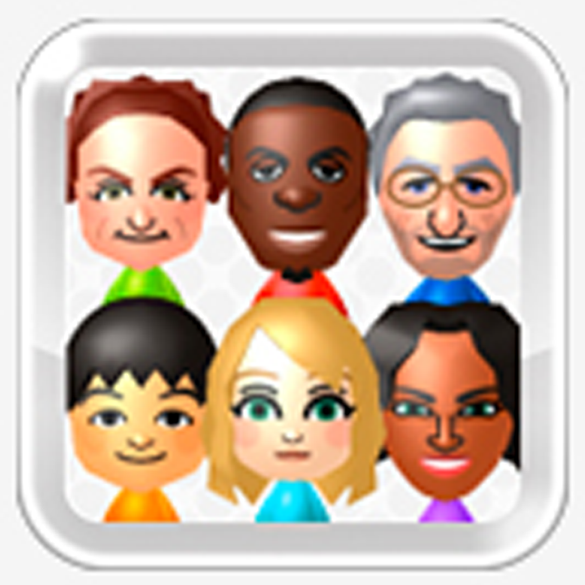

carregando vídeos

Você está ouvindo agora:
Mii Maker Editing Mii
◀◀
▶
▶▶
×
◀◀
▶
▶▶
Projetos
Contato
Tutoriais
01 / TUTORIAIS
EDIÇÃO, PROCESSO E DICAS
Tutoriais
.
Vídeos separados do portfólio, com a mesma grade visual.
＋
×